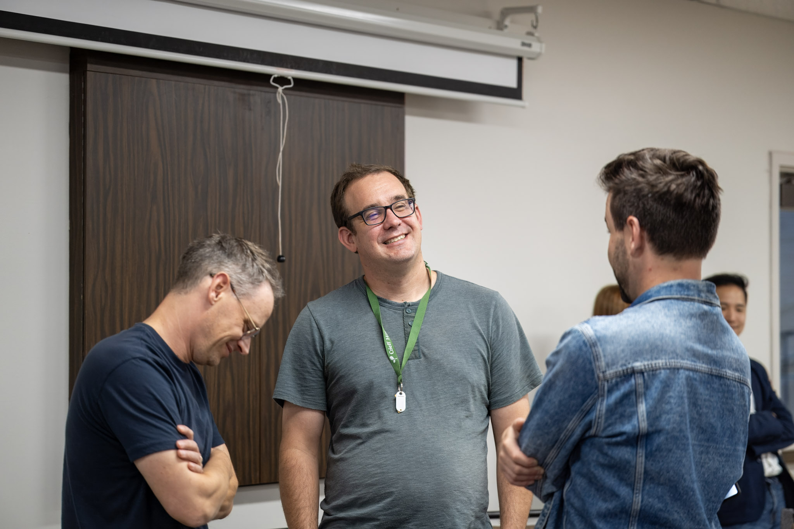

Institute for Christian Studies
Leading a church today is heavy work. These resources from the ICS community are yours, free to use.
The Institute for Christian Studies is a graduate school for philosophy and theology in Toronto, working in the Reformational tradition since 1967. We know what congregations are carrying right now: polarization, anxiety, and hard conversations. These resources are our gift to your church, and everything here is free for your congregation to use.
Rooted without becoming rigid. Honest without becoming cynical. Faithful without becoming fearful.
Research and a play on congregations pursuing justice
The Justice & Faith play
Video arriving here soon
A collaborative research project exploring how Christian Reformed congregations understand and pursue justice, developed with the Centre for Community Based Research. The play performed as part of the project brings its findings to life, and both are offered here for your church to watch, read, and discuss.
Read the ResearchA recorded conversation from the ICS community, offered for your congregation to listen to and discuss together.
Prefer a file? Download the recording.
From this past May: a talk offered for your congregation to share and discuss together.
Available Soon